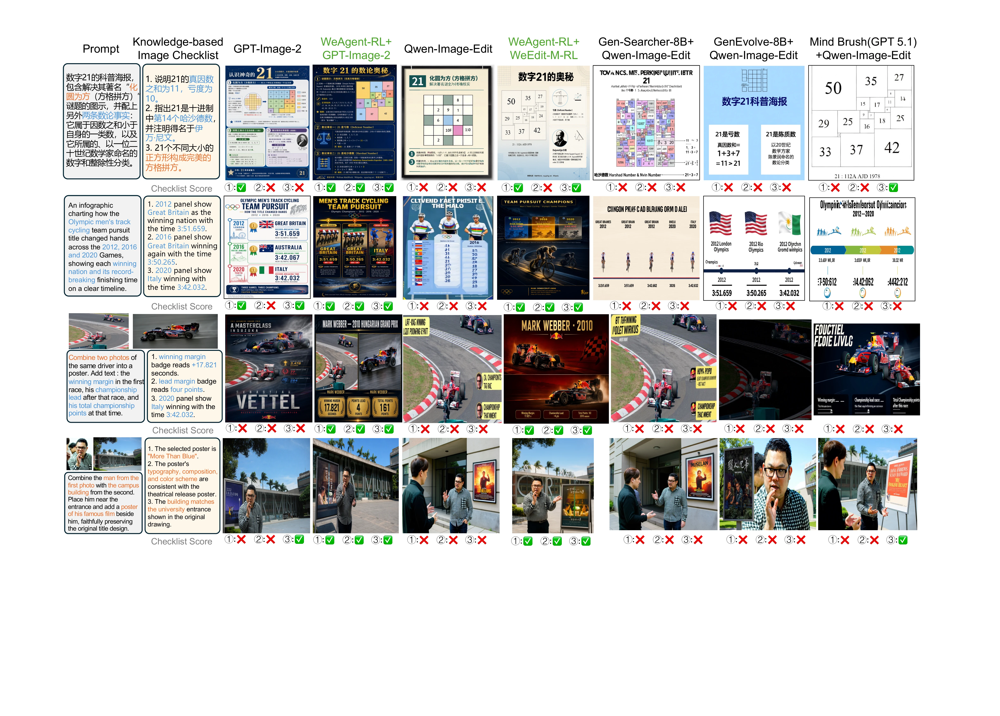

Multimodal harness
Persistent evidence, explicit visual verification, and code-based integration keep long-horizon research grounded.
Multimodal agentic generation & editing
Weixin AI, Tencent

Overview
Image generation and editing models have advanced rapidly, yet remain unreliable when prompts require external world knowledge. Bounded and long-tail parametric knowledge prevents direct or reason-then-generate approaches from recovering the required facts and visual appearances. Existing agentic methods add retrieval, but remain constrained by insufficient visual verification, overloaded policy models, and weak integration of textual and visual evidence. We present WeAgent-MMGenEdit, a full-stack recipe spanning a multimodal harness, scalable data construction, a comprehensive benchmark, and post-training for both the agent policy and image backend. WeAgent-Harness manages persistent evidence and provides dedicated verification and integration tools that organize retrieved evidence into a dense carrier. Our pipeline yields 23K supervised trajectories and 14.7K RL tasks with three-layer verifiable checklists, while WeBench-MMGenEdit evaluates bilingual knowledge-intensive generation and multi-image editing. Together, these components enable a 30B-total / 3B-active policy to outperform similarly sized policy models and approach the performance of a trillion-parameter agent.

The recipe
Reliable knowledge-intensive generation is a systems problem. We jointly improve the runtime, supervision, policy, and image backend.
Persistent evidence, explicit visual verification, and code-based integration keep long-horizon research grounded.
Bilingual multi-hop tasks are paired with aligned checklists for the agentic chain, model input, and final image.
Supervised fine-tuning and checklist-grounded RL teach the policy to retrieve, verify, and compose evidence.
Multi-reference SFT and reward-driven diffusion RL improve reference conditioning and faithful rendering.
Runtime
A persistent multimodal runtime for retrieval, verification, structured integration, and delivery.

Web and image search build a broad pool of external evidence.
Focused visual analysis separates inspected references from raw candidates.
Code-rendered carriers bind entities, attributes, facts, and layout in pixels.
One interface supports generation and editing with ordered references.
Data engine
Bilingual multimodal knowledge becomes verifiable multi-hop tasks, expert trajectories, and targeted post-training data.

Evaluation
A human-audited bilingual benchmark that gives generation and editing equal weight.

Optimization
The policy learns to research and compose better evidence; the image model learns to follow that evidence more faithfully.
Grouped rollouts, isolated process and prompt judges, failure-aware normalization, GSPO, and asynchronous policy refresh improve the full research trajectory.

Heterogeneous reference conditioning is installed with SFT, then refined with a five-dimensional VLM reward and Diffusion-NFT optimization.

Results
Gains appear in the agentic process, the multimodal prompt sent to the backend, and the final rendered image.
Qwen-Image/Edit backend, from direct generation to the full system.
Knowledge-intensive editing improves with agent and image-side post-training.
The post-trained policy retrieves, verifies, and integrates evidence more reliably.
Verified visual knowledge survives into the final generation request.
Qualitative study
Across knowledge-rich infographics and multi-reference edits, the complete system preserves more of the facts, identities, constraints, and layout requested by the user.
